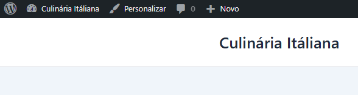
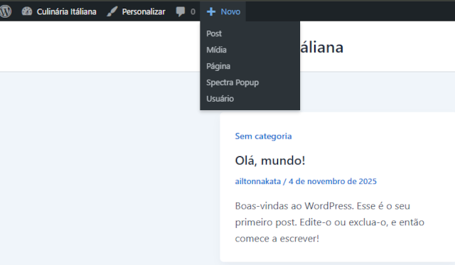
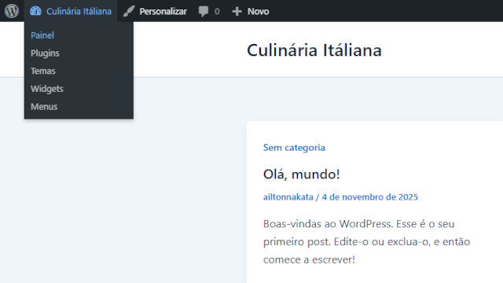
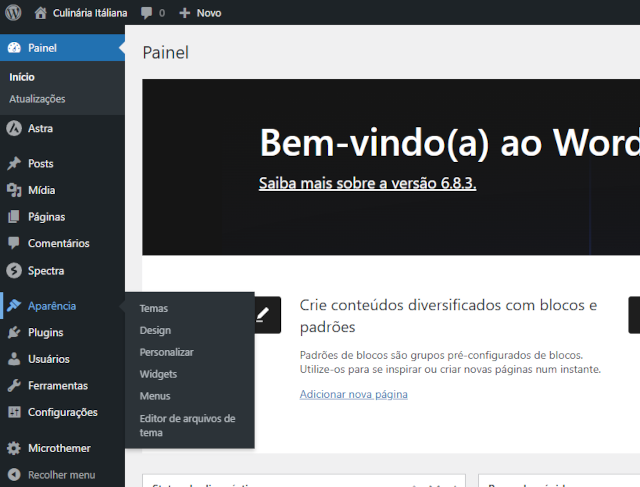

Painel de Controle
O Painel de Controle do WordPress é a interface administrativa onde você pode gerenciar todo o conteúdo e as configurações do seu site. Ele oferece uma variedade de ferramentas e opções para personalizar seu site, adicionar novos conteúdos, gerenciar usuários, instalar plugins e temas, e muito mais.
Link - Grupo WordPress
Como é o Painel do WordPress?

Menu Dinâmico WordPress

Use o Menu Dinâmico para poder ter acesso mais rápido às funcionalidades do WordPress.
Menu Personalizar
O Menu Personalizar vamos ver quando estivermos aplicando as cores, fontes e novos estilos ao site.
Menu Geral

Aqui você vai ter acesso direto ao Painel de Controle do WordPress.
Painel de Controle

O Painel de Controle do WordPress oferece uma visão geral rápida do status do seu site, incluindo estatísticas de visitantes, atualizações recentes, rascunhos de posts e outras informações importantes.
Como é um painel de controle típico, você encontrará seções para gerenciar seu conteúdo, aparência e configurações do site. Orienta-se que você explore cada uma dessas seções para aproveitar ao máximo o WordPress.